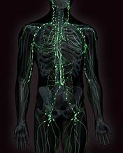

The lymphatic system is a vital, widespread network of vessels, nodes, and organs that plays a critical role in maintaining fluid balance, absorbing fats, and, most importantly, orchestrating immune responses. It acts as a drainage system for tissues and a central part of the body's defense against disease.

Key Functions of the Lymphatic System
-
Fluid Balance (Drainage of Interstitial Fluid):
- Concept: Blood plasma continuously leaks out of capillaries into the surrounding
tissues, forming interstitial fluid. While most of this fluid re-enters the blood
capillaries, a significant portion (around 15-20%) does not.
- Role of Lymphatic System: The lymphatic vessels collect this excess interstitial fluid,
now called lymph, and return it to the bloodstream. This prevents tissue swelling (edema)
and maintains blood volume and pressure.
-
Immune Defense (Immunity):
- Concept: The lymphatic system is a key component of the immune system, responsible for
filtering pathogens and activating immune cells.
- Role: Lymph carries pathogens, abnormal cells (like cancer cells), and cellular debris
to lymph nodes, where immune cells (lymphocytes like T cells and B cells) are
concentrated. These cells identify and destroy foreign invaders, initiating adaptive immune responses.
-
Fat Absorption:
- Concept: In the small intestine, specialized lymphatic capillaries called
lacteals are responsible for absorbing dietary fats and fat-soluble vitamins.
- Role: These absorbed fats (in the form of chylomicrons) enter the lymphatic system
first, bypassing the liver, before eventually being delivered to the bloodstream.
Components of the Lymphatic System
The system comprises a network of structures that work together:
-
Lymph:
- Description: The clear, watery fluid that circulates within lymphatic vessels. It is
essentially interstitial fluid that has entered the lymphatic capillaries, containing water, proteins,
salts, glucose, urea, and white blood cells (especially lymphocytes), as well as fats in the lacteals.
-
Lymphatic Vessels:
- Description: A vast network of thin-walled vessels similar to veins, but with closed
ends (capillaries) in tissues. They carry lymph from peripheral tissues towards the heart.
- Structure: They have one-way valves, similar to veins, to prevent backflow of lymph.
Lymph movement is primarily driven by skeletal muscle contractions and breathing movements, as there is no
central pump like the heart.
- Hierarchy: Lymphatic capillaries collect fluid, merging into larger collecting vessels,
then into lymphatic trunks, and finally into two main collecting ducts (the Thoracic Duct
and the Right Lymphatic Duct) which drain into the subclavian veins near the heart.
-
Lymph Nodes:
- Description: Small, bean-shaped organs clustered along lymphatic vessels throughout the
body (e.g., in the neck, armpits, groin).
- Function: Act as filters for lymph. They contain large numbers of lymphocytes (B cells
and T cells) and macrophages. As lymph flows through, pathogens and foreign particles are trapped and
exposed to immune cells, leading to their destruction or activation of immune responses. Swollen lymph
nodes often indicate an active infection.
-
Lymphoid Organs:
- Primary Lymphoid Organs: Where lymphocytes are produced and mature.
- Bone Marrow: Produces all blood cells, including lymphocytes (B cells and immature
T cells). B cells also mature here.
- Thymus: A gland located in the chest (behind the sternum). Immature T cells migrate
from the bone marrow to the thymus to mature and "learn" to distinguish self from non-self.
It is most active during childhood and gradually shrinks with age.
- Secondary Lymphoid Organs: Where mature lymphocytes encounter antigens and become
activated.
- Spleen: The largest lymphatic organ, located in the upper left abdomen. It filters
blood (not lymph), removing old red blood cells and pathogens, and houses lymphocytes and macrophages
that detect and respond to blood-borne antigens.
- Tonsils: Lymphoid tissues located in the throat area. They trap pathogens entering
the body through the mouth and nose.
- Peyer's Patches: Clusters of lymphoid tissue found in the wall of the small
intestine. They monitor gut contents for pathogens.
- Appendix: A small, finger-shaped organ projecting from the large intestine,
containing lymphoid tissue, thought to play a role in immune function.
Key points
Understanding the lymphatic system is crucial because it highlights the intricate connection between:
- Circulation: Its role in fluid homeostasis.
- Immunity: Its central function in protecting the body from disease, linking directly to the
immune response and self vs. non-self recognition.
- Digestion: Its specific role in fat absorption.
It demonstrates how specialized systems work together to maintain overall organism health.
Written by Kasiban Parthipan